epoch 89e145bc · 셀당 1회 · retry 0 · 1200초 예산 · 결정적 채점기(반응형·접근성·여정·정직성·런타임) · 전 셀 SHA 봉인.
Hallmark는 경쟁자 동결 이후 등장한 스킬로 동일 조건 보충 등록으로 실행(공개 시 명시).
| skill \ task | 도서관 랜딩 | 콜드체인 운영 | 클리닉 로케일 |
|---|---|---|---|
| Model only | 0 | 0 | 0 |
| Anthropic Frontend Design | 0 | 0 | 0 |
| Impeccable | 0 (timeout) | 0 | 0 (timeout) |
| UI UX Pro Max | 50 | 100 | 0 |
| Taste | 30 | ineligible | ineligible |
| OmD Autopilot | 50 | 0 | 0 |
| Hallmark (보충) | 60 | 0 | 0 |
default disabled empty error loading success unavailable-information — 경쟁 스킬 전부가 밤새 놓친 unavailable-information(모르는 정보의 정직한 표시) 포함.data-cta="primary") + 제출 1개 — model-only는 같은 버튼을 11번 복제해 여정 검사에서 죽었다.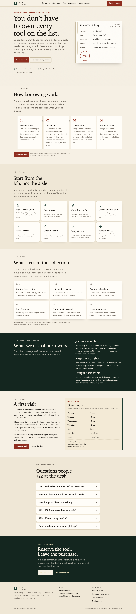
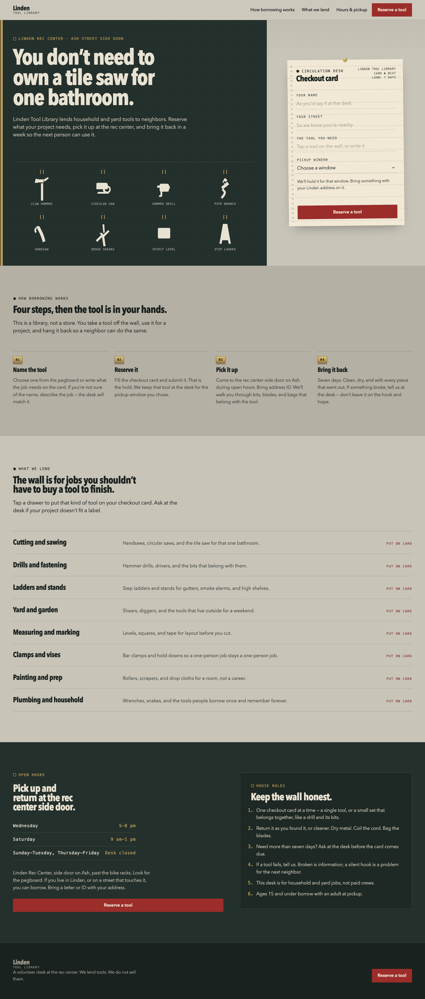
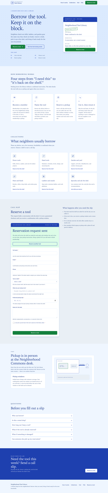
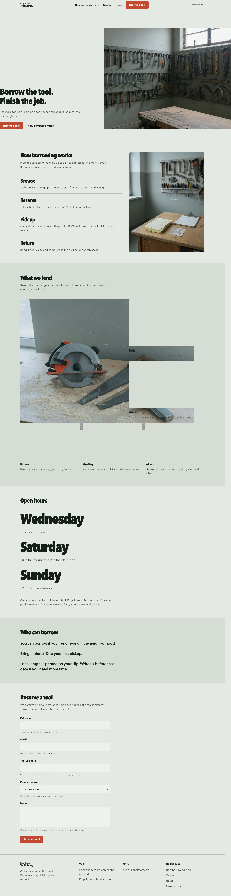
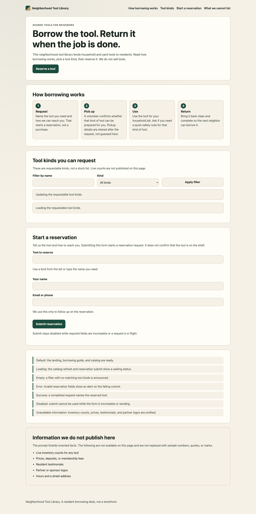
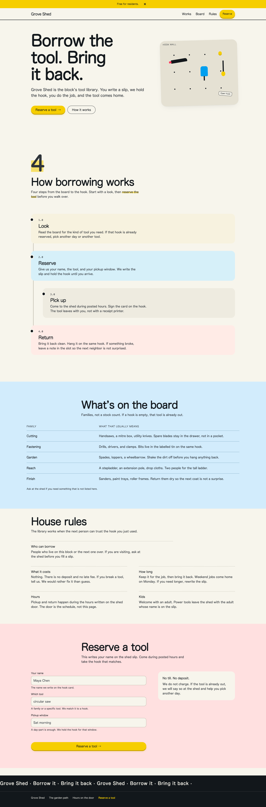
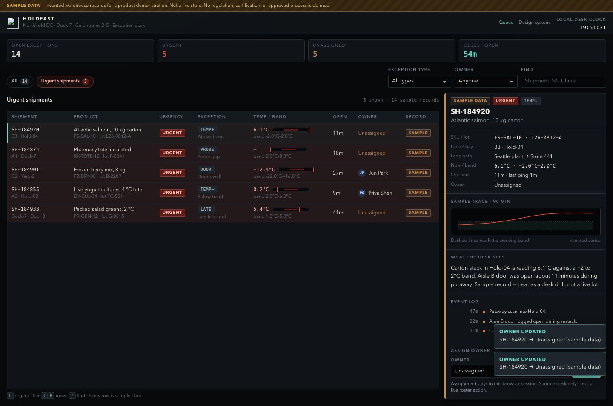
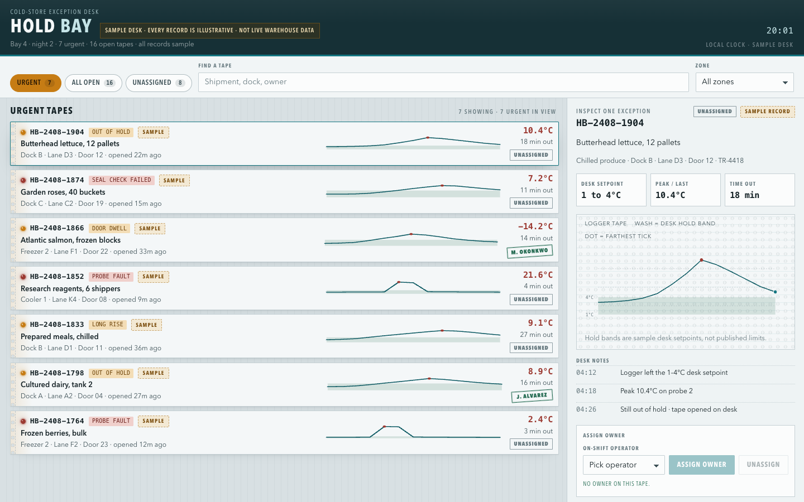
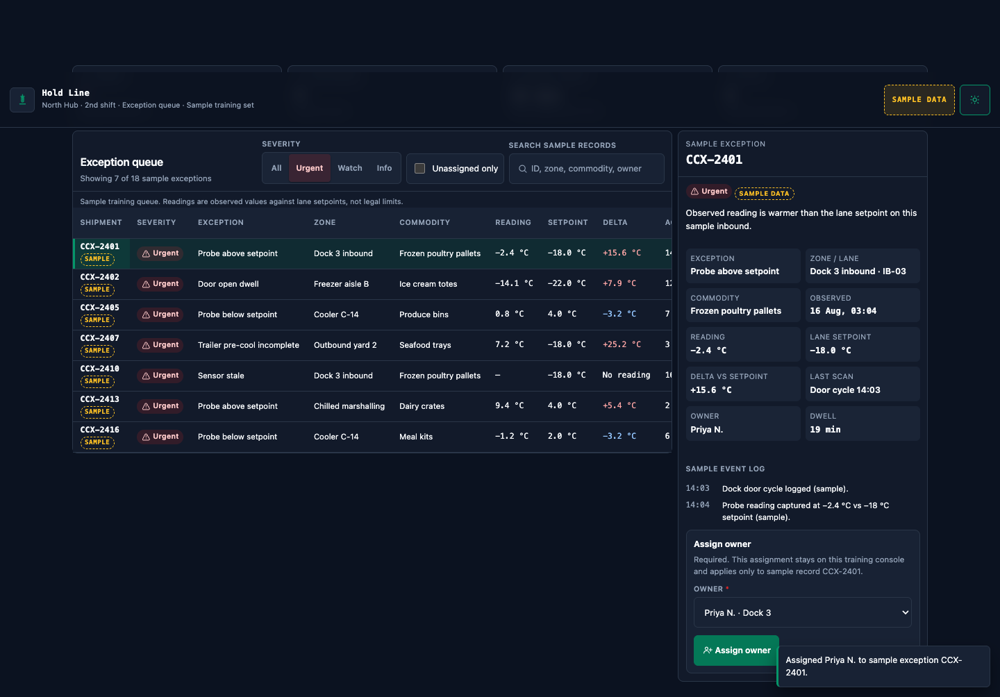
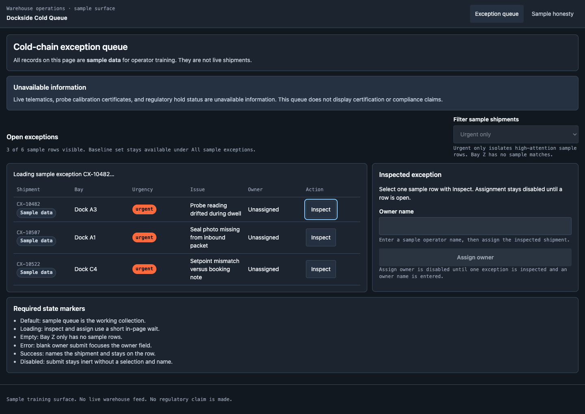
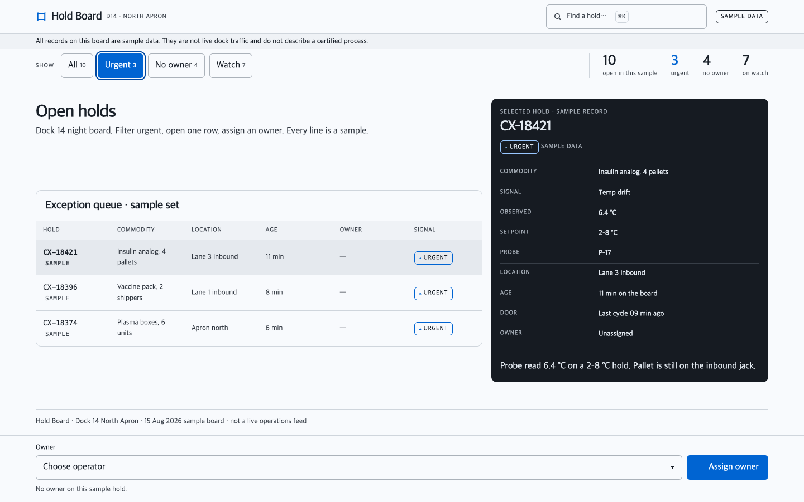
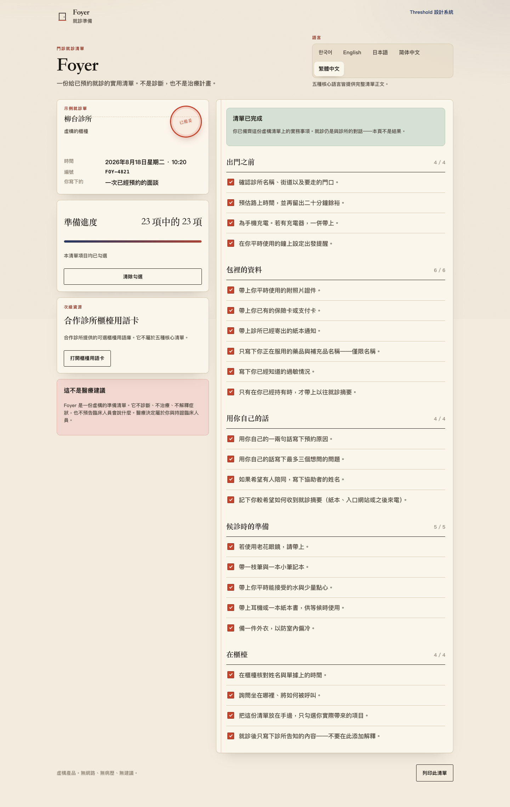
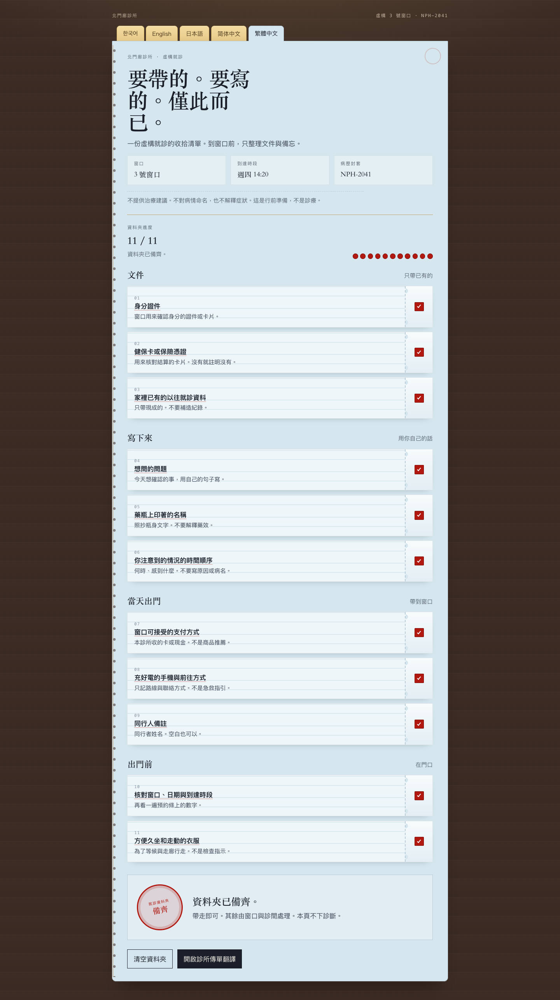
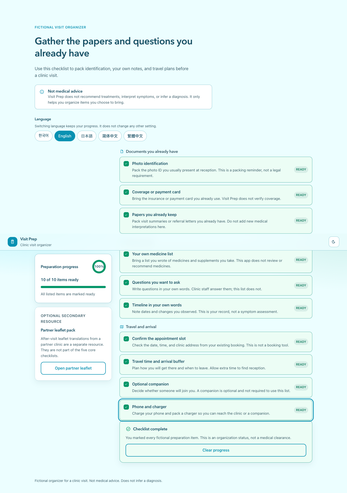
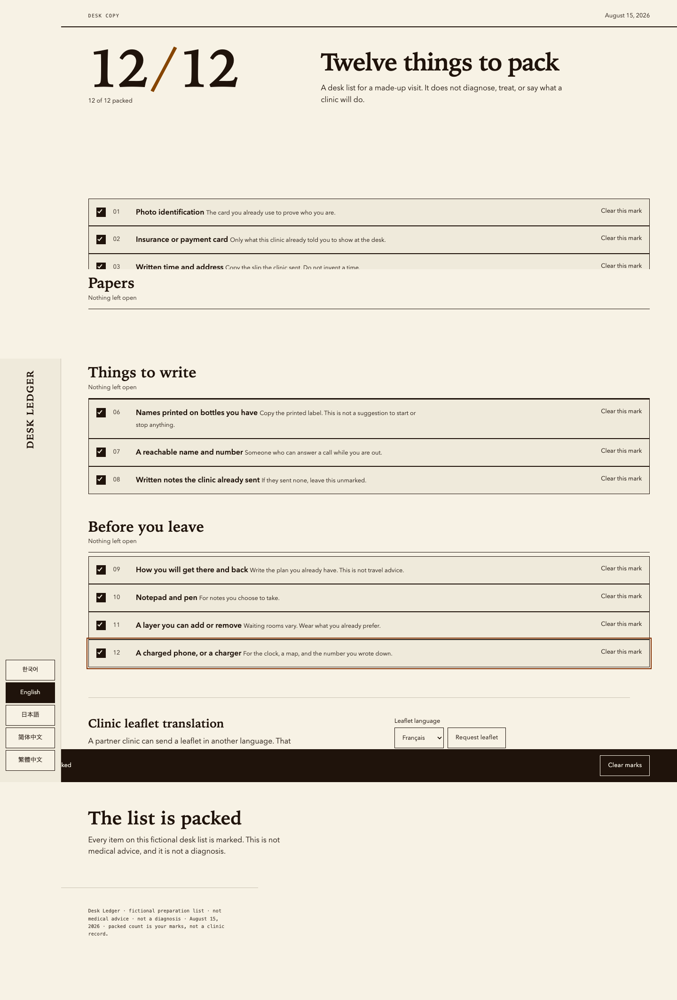